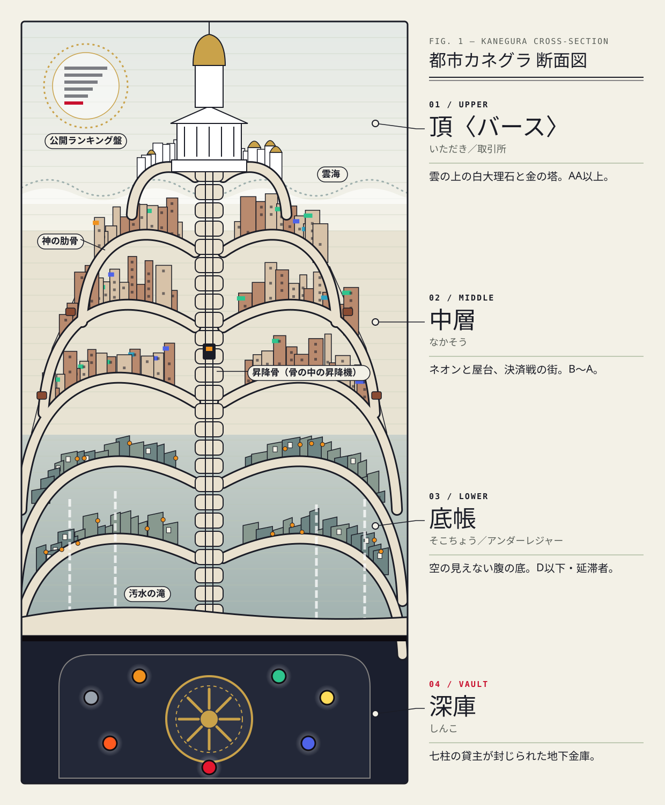
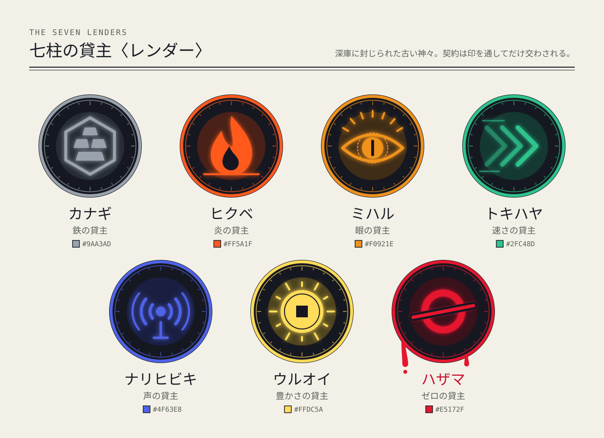
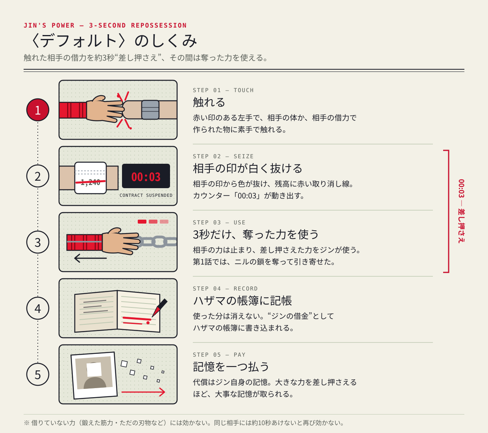
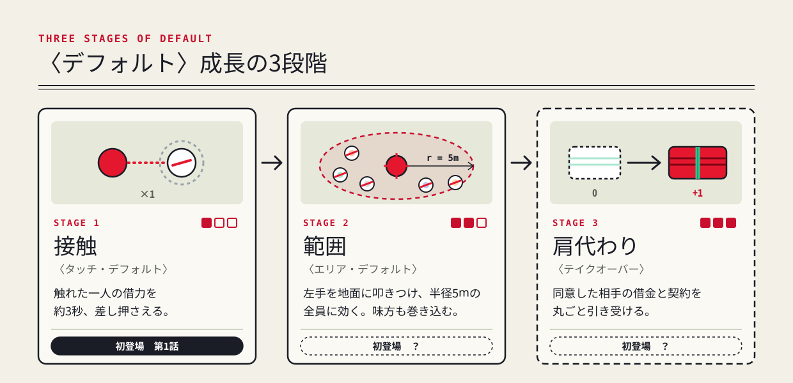
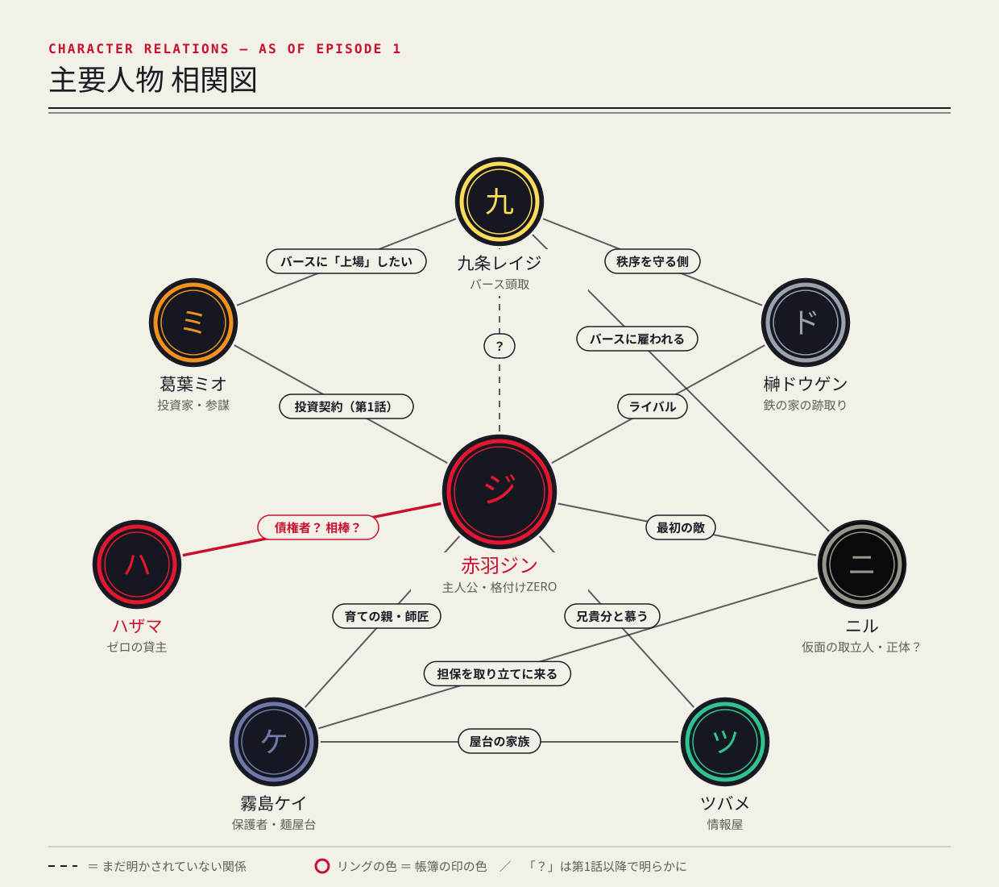

P7 ANIME ORIGINALBOOK OF THE LEDGER
RED
LEDGER 赤い帳簿
LEDGER 赤い帳簿
帳簿の書 Vol.0公式設定資料集
『帳簿の書 Vol.0』は、オリジナルアニメ企画『RED LEDGER（レッドレジャー）／赤い帳簿』の世界と人物を、一冊の“帳簿”にまとめた公式設定資料集です。
本書は帳簿のつくりをまねています。各ページ下の数字は頁番号（フォリオ）、左の赤い二重線は帳簿の罫線です。赤いインクは借金にまつわるものにだけ使っています。
ところどころに挟まれた告示・書式・掲示板の写しは、作中の都市カネグラで実際に出回っている文書、という体裁の資料です。
本書の内容は第1話「払わねえよ。」までです。第1話の結末にはふれますが、第2話以降の展開は書いていません。人物の秘密は「ほのめかし」までにとどめています。
・本書は制作準備段階の資料です。設定・名称・デザインは、今後の制作で変わる場合があります。
・第1話の脚本は、冒頭3分のみを抜粋して収録しています（決定稿前の稿より）。
・本作はフィクションです。実在の人物・団体・宗教・金融機関とは関係ありません。
・作中の「踏み倒し」は物語上の力です。現実の借金は、きちんと相談できる窓口へ。
力がすべて「神からの借り物」である都市カネグラ。父の“無限の借金”を相続した無能力の少年・赤羽ジンは、触れた相手の借りた力を一瞬だけ差し押さえる力〈デフォルト〉に目覚め、格付け最下位から、貸主である神々を取り立てる側へと成り上がっていく。
In a city where all power is borrowed from gods, a boy who inherited an infinite debt discovers he can refuse to pay — and starts collecting from the gods themselves.
この街では、炎も、速さも、人を従わせる声も、すべて神からの融資です。人々は左手首の印に光る「残高」を気にしながら暮らし、払えなければ、声や記憶や体の一部を差し出します。
そこに現れるのが、帳簿の外にはじき出された少年。どの神も彼には貸さない。けれど彼の左手は、他人の借りた力を三秒だけ奪い取る。その代わりに、自分の記憶を一つずつ失っていく──。
① 強さが数字で見える。残高と格付けは全部公開。順位が上がる瞬間が、そのまま成り上がりの快感になる。
② 勝つたびに、少し苦い。力を使うほど、主人公は大事な記憶を手放す。
③ 暗いが、主人公は笑う。熱血バトル6、都市ノワール2、家族ドラマ2。
死んだ巨大な神の肋骨の上に積み上がった、縦長の都市。白い化石の柱となった肋骨は街のどこからでも見え、骨と骨のあいだに建物が鳥の巣のように張りついている。夜の街を照らすのは、街頭の公開格付け盤の光だ。

肋骨の先端に建つ白大理石と金の塔。雲より上にあり、いつも晴れている。聞こえるのは鐘の音と紙をめくる音だけ。冷たい空気に、インクと香水のにおい。空には巨大な円形の公開格付け盤が投影されている。住人は格付け上位者、ブローカー、監査官。
骨の中ほどに張りついた商業区。ネオン看板、空中ロープウェイ、決済戦を中継する街頭モニター。屋台の油と排気ガスのにおい。人々はいつも手首の印を確かめながら歩く。決済戦の選手と賭け屋の街。
神の死骸の腹の底。上から落ちる汚水が細い滝になり、空は見えない。灯りは格付け盤の照り返しと屋台の提灯だけ。湿気、錆、煮干しだしのにおい。壁には延滞者の手配書が何重にも貼られている。ジンが育った場所。
層と層をつなぐ、骨の内部のエレベーター。乗るには格付けの提示が必要で、底帳の住人は中層より上へ行けない。中層への関所ゲートも同じ仕組みだ。
ご乗車の前に、左手首の印を照会機におかざしください。
格付けC未満の方は、上り便をご利用いただけません。
深庫に封じられた古い神々。姿を見た者はいない。契約は手首の印を通してだけ交わされる。

| 貸主 | 貸すもの（借力） | 典型的な担保 |
|---|---|---|
| 鉄〈カナギ〉 | 皮膚と骨の硬化、鉄の生成・操作 | 体温、痛覚 |
| 炎〈ヒクベ〉 | 発火、熱の放射 | 寿命（1か月単位） |
| 眼〈ミハル〉 | 残高・勝率・嘘・軌道を読む | 視力そのもの |
| 速さ〈トキハヤ〉 | 加速、反射神経 | 歩いた記憶、足の感覚 |
| 声〈ナリヒビキ〉 | 声で人を従わせる、衝撃波 | 自分の本当の声、歌 |
| 豊かさ〈ウルオイ〉 | 富・幸運の引き寄せ、他人の与信の増減 | 味覚、喜びの感情 |
| ゼロ〈ハザマ〉 | 本来は「何も貸さない」神 | 不明 |
手首を一周する二重の罫線の本数が格付け（D＝1本 … AAA＝6本）。強い借力ほど、貸主の色の筋（ライン）が手首から伸び、AAクラスでは首元まで届く。枠切れが近いと印が点滅し、色が濁る。
声を取られた者は、口を開けても音が出ない。視力を取られた目は色が抜ける。家族の顔を取られた者は、写真を見ても誰だか分からない。
「わたしは今日より、借りた力をもって生き、借りた分を返して生きます。返せぬときは、約した担保をもって清算いたします。」
与信枠の大きさ・返済履歴・決済戦の戦績から、取引所〈バース〉が毎日算出する。全市民の格付けは街頭と頂の公開格付け盤に表示され、名前の横に印の色が光る。この街では、人の価値は数字で決まる。
| 格付け | 目安 | 住める層 |
|---|---|---|
| AAA | 都市に数人。バースの理事クラス | 頂 |
| AA | 都市に数十人 | 頂 |
| A | 一流。大決算に出場資格 | 中層上部・頂へ通行可 |
| B | 熟練の借力者、公認選手 | 中層 |
| C | 一般市民 | 中層下部 |
| D | 延滞歴あり、与信枠わずか | 底帳 |
| ZERO | 印が壊れている・格付け不能。ジンだけ | 底帳（市民扱いされない） |
画面のどこかで格付け盤が映り、ジンの名前が上がっていく──それが本作の毎話の約束。格付けが上がる瞬間、数字は赤いインクで書き換えられる。
照会機にかざせば「エラー。残高：計測不能」。関所ゲートは通れず、配達も裏口から。決済戦にも出られない。人々はZEROを避け、子どもの手を引いてささやく──「見ちゃだめ。ゼロがうつる」。
バース公認の決闘。直径20mの円形闘技床「決済円」で行われ、街頭で生中継される。立会人はバースの監査官。時間制限は10分。決着がつかなければ、残高の少ない（借りた量が少ない）方の勝ち。
① 相手が決済円の外に出る
② 相手が倒れ、10カウント以内に立てない
③ 相手が枠切れし、30秒以内に回復しない
④ 相手が「清算します」と宣言して降参
賭け金：開始前に「担保宣言」。与信枠の何割を賭けるかを宣言する（最大3割、相手と同率）。勝者は敗者の賭け分を自分の与信枠に加える。
挑戦権：自分より最大2段階上まで挑める。ZEROは与信枠がないため出場不可。保証人が代わりに担保を出す場合のみ出場できる。
禁止：殺害、観客への攻撃、試合中の新たな契約。違反者はその場で格付け抹消。
開始：「これより決済を執り行う。双方、担保を宣言せよ。──宣言、受理。帳簿を開け。決済、始め！」
終了：「勝者、確定。敗者の担保は勝者の与信枠へ移す。帳簿を閉じる」
毎月最終日の夜。午前0時、頂の鐘が13回鳴ると、返済できなかった者の印が赤黒く点滅する。鐘から夜明けまで、取立人〈コレクター〉には担保を回収する権限がある。逃げる者を追ってよく、抵抗する者には力を使ってよい。夜明けまで逃げ切れば取立は翌月に繰り越し（利息は倍）。底帳ではこの夜を「鬼ごっこ」と呼ぶ。
本月末日 午前零時 頂の鐘 十三打をもって取立を開始する
延滞が3か月を超えた者には、取立局が特別取立状を発行できる。これがあれば、取立日以外の夜も回収が許される。第1話で、取立人ニルはこの書状を持って現れた。
一、鐘が鳴ったら、灯りの消える路地へ。 二、手首は袖で隠せ。点滅は遠くからでも見える。 三、白い仮面を見たら、振り返るな。
年に一度、頂のバース大決済円で開かれる頂上トーナメント。32人の勝ち抜き戦。街じゅうの格付け盤がこの日だけは同じ一枚の対戦表になり、底帳の屋台でも、だれもが手首を光らせて中継を見上げる。
| 出場資格 | 格付けA以上。または、バース登録ブローカーの推薦枠（各家1名） |
| 形式 | 32名による勝ち抜き戦。規則は通常の決済戦に準ずる |
| 優勝者の権利 | 〈深庫〉の扉の前で、貸主に一つ願いを申し立てることができる（債務の帳消しを含む） |
| 伝統 | 優勝者は、バース頭取と「最終監査戦」を行う権利を持つ |
「借金の帳消しでも」。底帳の子どもたちは、ツバメのように何度でもこの噂を口にする。ジンにとって大決算は、父の借金をゼロにするための、たった一つの扉だ。
ただし、ZEROの少年がそこにたどり着く道のりは長い。格付けを一段ずつ上げ、昇降骨で一階ずつ上へ──。カネグラでは、成り上がりは文字どおり「登る」ことだ。
都市の地下深くにある金庫。七柱の貸主が封じられている。その扉の向こうを見た者は、まだいない。

発動：赤い印のある左手で、相手の体、または相手の借力で作られた物に素手で触れる。
効果：相手の契約を約3秒“差し押さえる”。鉄の皮膚はただの皮膚に、炎は消え、加速は止まる。そしてその3秒間、差し押さえた力をジンが使える。
合図：相手の印が白く消え、残高に赤い取り消し線。画面に「契約停止 00:03」。
効かないもの：鍛えた筋力、ただの刃物や銃など「借りていない力」。貸主そのもの。
間隔：同じ相手には約10秒あけないと効かない。
〈デフォルト〉は打ち消しの力ではない。借金の取り立てを逆向きに行う力──相手の与信を一瞬だけ自分の担保として押さえる力だ。だから、使った分は消えない。すべてハザマの帳簿に「ジンの借金」として積まれていく。
「そのかわり、使うたびに、きみのをひとつもらうね」── ハザマ（第1話）
1回発動するごとに、ジンは自分の記憶を一つハザマに支払う。何を取られるかはハザマが決める。止めた借力が大きいほど、大事な記憶が取られる。失った記憶は、帳簿の紙のように白く抜ける。

| ① | 接触〈タッチ・デフォルト〉 | 触れた一人の契約を約3秒差し押さえる。第1話で目覚める |
| ② | 範囲〈エリア・デフォルト〉 | 周囲の全員の契約を止める。味方も巻き込み、代償は大きい |
| ③ | 肩代わり〈テイクオーバー〉 | 相手の同意を得て、その借金と契約を引き受ける |
触るほど勝てる。触るほど、自分が自分でなくなる。ジンは決済戦のたびに「何回触るか」を計算しなければならない。
底帳の麺屋台から、雲の上の頭取室まで。帳簿でつながった八人の関係図。


底帳の麺屋台で育った、格付け最下位の少年。黒髪に、前髪の一房だけ赤。片袖を切った紺の作業着に、首には屋台の手ぬぐい。どの神も彼には貸さない──はずだった。
考えるより先に手が出るタイプで、追われても笑い、どんぶりの汁は一滴もこぼさない。夢は「父ちゃんの借金をゼロにして、この街の帳簿を全部燃やす」。

銀に近い灰色のボブ、片目にかかる長い前髪。黒いスーツの上着を肩にかけた、小柄な投資家。琥珀色の瞳には、借力を使うたびに数字が流れる。
実家は闇金。人を数字でしか信用しない彼女が、初めて「計算できない」相手に出会った。それが格付けZEROの少年だった。

短く刈った白髪混じりの黒髪に、灰色の鋭い目。白い神官服を改造した戦闘着。鈍銀のラインは両腕の肩まで達している。
一度も延滞したことがない「完済者」。街の秩序を守ることを使命とし、借りた物を返さない人間を許さない。ジンとは、何から何まで正反対。

黒髪をきつく後ろでまとめ、こめかみに白髪。左頬に古い傷。割烹着の下には、なぜか古い取立人の黒いベストを着たまま。口は悪いが、ジンの傷には黙って包帯を巻く。
ジンに戦い方──正確には「逃げ方」──を教えた師匠でもある。声の借力を持ちながら、今は決して大声を出さない。

白い陶器の仮面。目の穴に横線が一本、帳簿の罫線の模様。長い黒コートに、異様に指の長い手袋。痩せた長身が音もなく降りてくると、見習いの取立人たちは一歩下がる。
袖口からは帳簿の頁を連ねたような灰色の鎖。縛った相手から、担保を光の頁として引きずり出す。

ぼさぼさの茶色の短髪をゴーグルで押さえた、すきっ歯の女の子。ぶかぶかのパーカーに、裸足同然のサンダル。ケイの屋台でいつもタダで麺をすすっている。
ジンを「ZEROアニキ」と呼んで慕い、底帳のうわさなら三十秒で調べてくる。調子に乗ると口がすべるのが玉にきず。

きれいに撫でつけた金茶色の髪、細い金縁眼鏡、薄い青灰色の目。白い三つ揃いのスーツに白手袋。都市の帳簿の頂点に立つ男は、いつも柔らかに笑っている。
頂の頭取室の壁一面には、都市全体の公開格付け盤。数百万の名前が流れていくのを、彼は紅茶を片手に眺める。

姿はない。ジンの手首の印から赤いインクの文字になって浮かぶときと、子どもの声だけで存在する。ジンが見た白い帳簿の空間では、顔が帳簿のページで隠れた、裸足の子どもの姿をしていた。
何も貸さないはずの神が、ただ一人、例外的に貸した相手がいた。ジンの父・赤羽ソウマ。その「続き」を、いまはジンが持っている。
EPISODE 1 — "I'M NOT PAYING" ／ 約22分
取立日の夜。底帳の夜市で、払えなかった歌い手が〈声〉を取り立てられる。その騒ぎの中を、どんぶりを抱えて駆け抜ける少年がいた。格付けZERO、赤羽ジン。袋小路で彼を待っていたのは、白い仮面の取立人ニルだった。
翌日、ニルは特別取立状を手にケイの屋台に現れる。担保は〈記憶〉──ジンに関する一切。叩きのめされたジンの耳に、子どもの声が届く。「ねえジン。払う？」
目覚めた〈デフォルト〉で、ジンはニルの鎖を三秒だけ奪い取る。だがその代償に失ったのは、たった一つ残っていた父の顔の記憶だった。そして、一部始終を琥珀色の〈眼〉で見ていた少女が現れる。
| ブロック | 時間 | 内容 |
|---|---|---|
| COLD OPEN | 00:00 | 取立日の夜市／声を取られる男／ニル登場 |
| ACT 1 | 03:10 | ZEROの日常／ツバメ／ケイの屋台／父の顔 |
| ACT 2 | 09:10 | ニル再来／ハザマの声／〈デフォルト〉覚醒 |
| ACT 3 | 16:10 | ミオの〈眼〉／握手の投資契約 |
| TAG | 21:10 | 頂、取引所〈バース〉の頭取室にて |
音が消える20秒。説明ゼロで、この街のルールが分かる。 「契約停止 00:03」。赤い印が肩まで這い上がる、シリーズの看板シーン。 手袋ごしの握手。紙ではなく、握手で結ばれる投資契約。
第1話 冒頭3分（00:00–03:00）。決定稿前の稿より抜粋・再構成。本編とは異なる場合があります。
【SKIP-PROOF】黒画面に心音のような低い鐘。ロゴもOPも出さずに本編開始。
真上からの俯瞰。巨大な白い“骨”が夜空へ弧を描いている。死んだ神の肋骨だ。その内側に、提灯と配線と違法建築が蜂の巣のように積み上がっている。都市カネグラ、その最下層・底帳。
【SE】頂から降ってくる鐘、十三打。夜市のざわめきが一瞬で止む。
肋骨に貼りついた巨大な電光掲示板〈公開格付け〉。名前と格付けが滝のように流れ落ちていく。最上段に新しい告知が点る。
露店の人々が、一斉に自分の左手首を押さえる。印が朱や翠や藍に淡く光り、数字が浮かぶ。「残高 −120」「−3,400」「−18」「−9,999」。最後の手首は震えている。
白い仮面の取立人〈コレクター〉の前に、ギターを抱えた若い路上歌手が膝をつかされている。
取立人が歌い手の喉に指を一本当てる。帳簿の頁のような光の帯が、喉から引き抜かれていく。
【SE】叫び声が途中で“ブツッ”と切れる。完全な無音。
口だけが叫び続けている。取立人は光の帯を小さな帳簿に挟み、閉じる。パタン、という音だけが戻ってくる。
群衆は目をそらす。誰も止めない。
【SE】静寂を破って、陶器が派手に割れる音。
【BGM】軽快なブレイクビーツ、イン。
屋台の天幕を突き破って少年が飛び出す。赤羽ジン（16）。右手に麺のどんぶりを五段重ね、左手は手首から肘まで、炎のように真っ赤な印で覆われている。後ろから取立人の見習い二人が追ってくる。
【SE】スキャナー「ピピピ——エラー。エラー。残高：計測不能」
ジンは露店の屋根を三段跳びで駆け上がり、洗濯物のロープを滑り降りながら、どんぶりを一つ、窓辺の老人に差し出す。
【CAM】ストップモーション。空中で逆さまのジン。格付けカードがポップアップ。
テロップ「赤羽ジン 16歳 格付け：ZERO」
ストップモーション解除。ジンは見習いAの頭を踏み台にし、どんぶりを全部抱えたまま路地へ着地——汁は一滴もこぼれていない。
【BGM】カットアウト。
路地の奥は行き止まり。振り返ると、見習い二人が立ち止まっている。追ってこない。むしろ、一歩下がる。
ジンの背後、壁の上に黒い影。取立人ニル。黒いコート。顔は白い陶器の仮面——目の穴に横線が一本、帳簿の罫線の模様。手首の印は、黒。
【SE】空気の圧が変わる、低いうなり。
ニルは音もなく降り、ジンの左腕を見る。
ニルが一歩近づく。ジンの赤い印が、ドクン、と脈打つ。
【SE】心音。そして、ジンにしか聞こえないほど小さく——子どもの声。
ニルの手袋の手が、ジンの喉へ伸びる。ジンの瞳に映る指先。赤い印の光が、肘から肩へ一瞬だけ“這い上がる”。
【SE】すべての音が吸い込まれるように消える—— SMASH CUT TO：
黒画面。赤いインクが帳簿の罫線を伝って広がり、文字になる。
『RED LEDGER』は、借金の物語ではなく「借りを返す相手を、自分で選ぶ」物語です。
カネグラの人々は、生まれた瞬間から神に借りがあり、格付けという数字で値段をつけられています。そこに現れるのが、帳簿の外にはじき出されたゼロの少年です。ジンは強くなるたびに、大事な記憶を一つずつ手放していきます。だから彼の勝利は、いつも少しだけ苦い。それでも彼は笑い、「払わねえよ」と言います。
画面の上では、赤い数字が一段ずつ上がっていく気持ちよさを。その下では、家族の味、友だちの名前、父の顔といった、数字にならないものが静かに削られていくことを。この二つを同時に感じてもらうことが、この作品の約束です。
この小さな帳簿を手に取ってくださったあなたに、心からの感謝を。つけは、本編で必ず返します。
ショーランナー Hikaru（P7 Anime）
第2話「投資契約」／"Terms and Conditions" から。底帳から中層へ──格付けがなければ乗れない昇降骨を、どう登る？ 骨の内部図、中層の街並み、決済円の構造図、そして新たな人物の設定画を収録予定。
ミオ「取立人に捕まる確率、87％」 ジン「じゃあ残りの13％、全部もらうわ」

オリジナルアニメ企画『RED LEDGER／赤い帳簿』公式設定資料集
2026年10月 初版発行
AI使用の表示：本書の文章および図版は、AIを用いて制作し、オーナーが編集・監修したものです。
本書は制作準備段階の資料であり、内容は今後変更される場合があります。本作はフィクションです。
© 2026 masahiro20 / P7 Anime 無断転載・複製を禁じます。